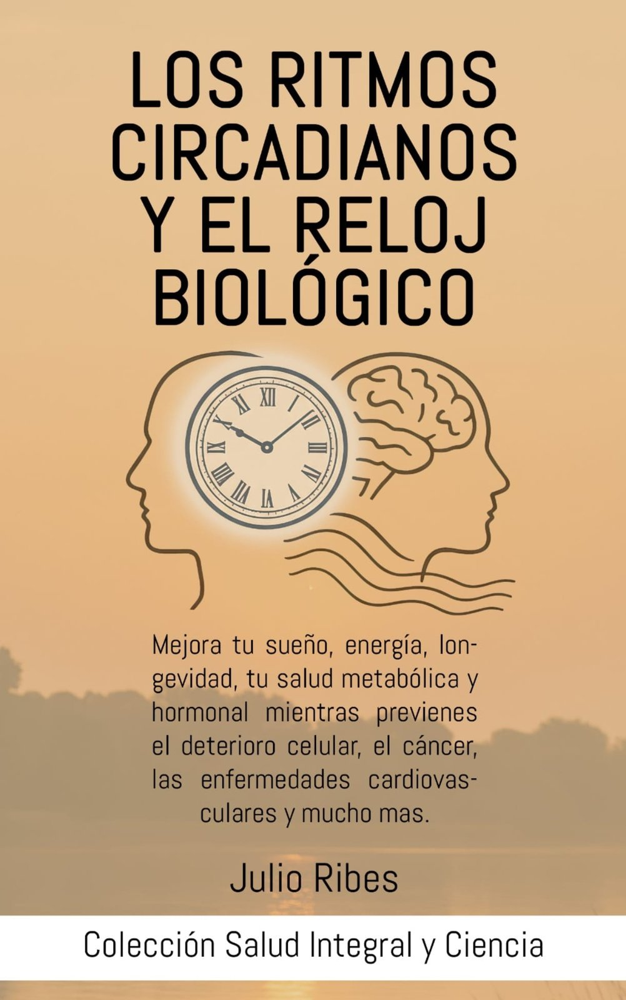
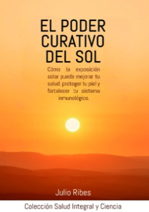
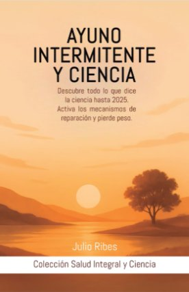
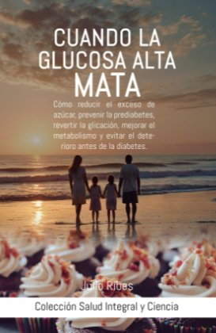
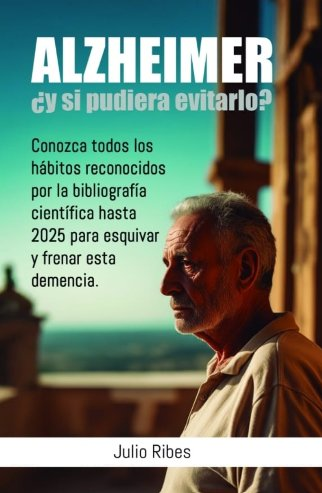

Una misma visión, cuatro
formas de cuidarte
Julio Ribes conecta el cuerpo, el movimiento y los hábitos cotidianos desde una visión integral de la salud.

Del tratamiento a la divulgación
Julio Ribes desarrolla su trabajo desde una visión que conecta el cuerpo, el movimiento y los hábitos cotidianos. Su actividad reúne la atención presencial en el centro, la divulgación a través de Optimización Circadiana y la escritura de la colección Salud Integral y Ciencia.
Una visión integral de la salud
Julio Ribes desarrolla su trabajo desde una visión integral de la salud que conecta el cuerpo, el movimiento y los hábitos cotidianos. Su actividad profesional se articula en torno a cuatro facetas que se sostienen entre sí: la osteopatía, el movimiento, la divulgación y la escritura.
En el Centro de Osteopatía y Pilates Julio Ribes, en Gandía (Valencia), atiende de forma presencial a cada persona con un abordaje manual que busca el origen del problema y no únicamente el síntoma. Su trabajo combina la osteopatía con el Pilates con máquinas, impartido en grupos reducidos y adaptado a cada caso, lo que permite un seguimiento cercano y personalizado.
El movimiento es para Julio una herramienta esencial del bienestar. Entiende el cuerpo como un sistema dinámico en el que la movilidad, la postura y la fuerza influyen en la salud cotidiana, y por eso integra el Pilates como complemento natural del tratamiento manual.
Junto a la atención presencial, Julio desarrolla una intensa labor de divulgación a través de Optimización Circadiana, un proyecto con el que comparte conocimiento sobre cómo la luz, la oscuridad, el sueño, la alimentación, el movimiento y la temperatura influyen en el organismo. Su objetivo es acercar la ciencia a un público amplio, con un lenguaje claro y sin promesas milagrosas.
La escritura es la cuarta expresión de esa misma visión. En la colección Salud Integral y Ciencia, Julio Ribes reúne en doce libros —ocho en español y cuatro en inglés— una mirada que conecta el cuerpo, los hábitos y la ciencia. Cada título aborda un aspecto concreto de la salud, desde los ritmos circadianos o la luz solar hasta el ayuno intermitente, la termogénesis o la glucosa.
Además, Julio participa en la formación de futuros profesionales en CIM Formación Valencia, en las áreas de osteopatía y quiropraxia, compartiendo su experiencia desde un enfoque práctico y aplicado. Trayectoria, centro, divulgación y libros confluyen así en un mismo propósito: comprender el cuerpo para cuidarlo mejor.
Formación y docencia
Osteópata colegiado
Nº de colegiado del osteópata: 464609988. La osteopatía no requiere prescripción médica para acudir a una sesión.
Docente en CIM Formación Valencia
Imparte formación especializada en osteopatía y quiropraxia para futuros profesionales, desde un enfoque práctico, riguroso y aplicado.
Ver formación
Todo forma parte de lo mismo
Cuatro facetas que se sostienen entre sí y comparten un objetivo: entender el cuerpo para cuidarlo mejor.
- 01
Osteopatía
Un abordaje manual que busca comprender y tratar el origen de lo que sientes.
- 02
Movimiento
El Pilates y el cuerpo en movimiento como parte esencial del bienestar.
- 03
Divulgación
Optimización Circadiana: compartir conocimiento sobre luz, sueño y hábitos.
- 04
Escritura
La colección Salud Integral y Ciencia, para profundizar en la salud.
Doce libros en dos colecciones
La colección Salud Integral y Ciencia reúne ocho títulos en español; Integral Health and Science, cuatro en inglés. Todos disponibles en Amazon.
Salud Integral y Ciencia (español)
 Gafas Rojas: La Solución Circadiana
Gafas Rojas: La Solución Circadiana
Los ritmos circadianos y el reloj biológico
El poder curativo del sol
Ayuno intermitente y ciencia Termogénesis: El poder del frío
Termogénesis: El poder del frío Basta de tóxicos en el hogar: Proteja a su familia
Basta de tóxicos en el hogar: Proteja a su familia
Cuando la glucosa alta mata
Alzheimer, ¿y si pudiera evitarlo?